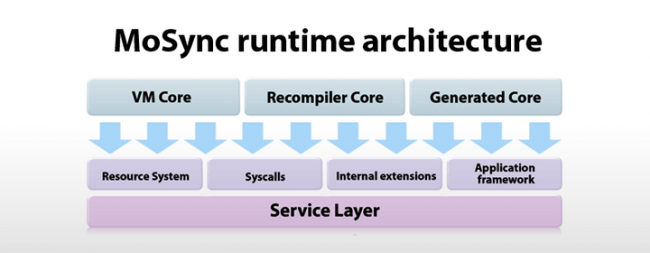

MoSync has two primary runtime architectures - one implemented in C++ and one in Java. However, the design is very similar in both cases.

A runtime includes a service layer providing file I/O, threading, networking, memory managment and other supporting functions.
This module holds the runtime's entrypoint. Its size and responsibilities vary across platforms. However, it typically handles platform-specific event management, initialization and destruction.
This module is responsible for implementing the basic features required for all platforms - graphics, audio, networking etc. It interprets MoSync resource files and also provides event managment, initialization and destruction.
This module provides facilities for managing resource objects, such as images, sounds and data blobs. It supports dynamic creation and destruction of resources, as well as conditionally loading resources depending on the platform (Android, iOS, etc.), the device's screen size, and so on.
Some features may not be available on all platforms. Such features are implemented as numbered functions called through a single Syscall. That Syscall returns a specific error value if the function being called is not present. This allows developers to determine whether such a non-universal API is accessible in runtime.
This module is responsible for the execution of MoSync programs. It interoperates with the syscalls and resource system. Cores come in a number of different flavors, all of which share a common interface to the above mentioned modules. These are the three main types:
| VM Core | Recompiler Core | Generated Core |
|---|---|---|
| A VM core is a virtual machine that loads, interprets and executes MoSync bytecode directly. The execution is implemented in a single, small function, allowing for efficient JIT optimization. This is the type of core we use for Java ME. | A recompiler core loads MoSync bytecode and recompiles it into native code for the platform concerned, typically ARM machine code. The generated machine code is then executed. This is the type of core we use for Windows Mobile and Symbian. | This type of core neither inteprets nor recompiles MoSync bytecode - instead, it contains native code generated ahead of time from MoSync IL, and exposes an interface consistent with other core variants. This is the type of core we use for iPhone. |
The reason we have three types of cores is that each has its distinct advantages. VM cores are great for debugging and conformance verification and are fully dynamic, making it possible to load new code at runtime, which is useful for many types of applications. Recompiler cores are more efficient, but provide less debugging support. They are also dynamic, albeit with some recompilation overhead when loading new code. Finally, generated cores provide zero overhead for low end devices, while sacrificing dynamicite. They are not able to load code at runtime.
All three types of core share a common interface - a generated or recompiler core works as a drop-in replacement for a VM core. This allows all the other modules to be shared across runtimes without modification.